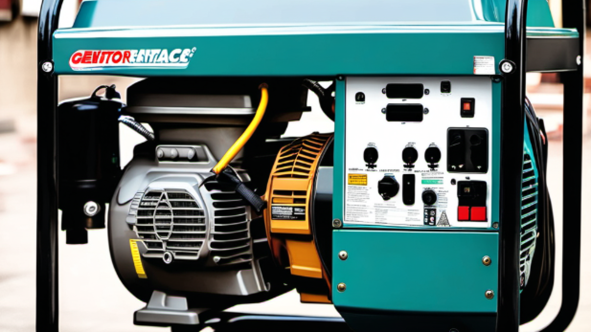

Генератор не заводиться
Перевіряємо паливо, свічку, фільтри, карбюратор, акумулятор запуску, стартер, датчик масла та контакти.
InService виконує діагностику, технічне обслуговування та ремонт бензинових генераторів і бензогенераторів у Харкові. Перевіряємо запуск, двигун, карбюратор і паливну систему, стартер, AVR, проводку та стабільність напруги.
Після діагностики майстер пояснює причину несправності та погоджує вартість до початку робіт. Якщо генератор димить, глохне, перегрівається або не видає стабільну напругу, краще не продовжувати експлуатацію до перевірки.

Орієнтуємося не лише на окрему деталь, а й на симптом, з яким звертається власник. Це допомагає швидше визначити напрям діагностики.
Перевіряємо паливо, свічку, фільтри, карбюратор, акумулятор запуску, стартер, датчик масла та контакти.
Діагностуємо AVR, генераторну частину, обмотки, проводку, автомати захисту та роботу під навантаженням.
Перевіряємо подачу пального, карбюратор, фільтри, оберти двигуна, перевантаження та стан генераторної частини.
Оцінюємо масло, охолодження, повітряний фільтр, паливну суміш, навантаження та механічний стан двигуна.
Перевіряємо кріплення, підшипники, стартерний механізм, привід та інші механічні вузли.
Уточнюємо мотогодини та регламент, перевіряємо масло, фільтри, свічку, паливну систему й основні контакти.
Під час ремонту перевіряємо не одну випадкову деталь, а пов’язану систему. Так можна знайти причину несправності та не замінювати справні вузли.
Діагностуємо запуск, компресію, сторонні звуки, перегрів, витік масла та зношення механічних вузлів.
Перевіряємо бак, паливопровід, фільтр, кран, карбюратор, подачу пального та якість паливної суміші.
Перевіряємо свічку, котушку запалювання, датчик масла, акумулятор, ручний та електричний стартер.
Шукаємо причину відсутньої, заниженої, завищеної або нестабільної напруги на виході.
Діагностуємо обмотки, контакти, проводку, розетки, автомати захисту та генераторну частину.
Перевіряємо масло, фільтри, свічку, кріплення, контакти та роботу генератора під навантаженням.
На ринку найчастіше зустрічаються генератори Honda, Hyundai, Könner & Söhnen, Forte, EnerSol, Vitals, Dnipro-M, Matari, Sigma, AL-KO, Makita та Daewoo. Конструкція й доступність запчастин відрізняються навіть у моделей одного бренду.
Перед візитом: повідомте бренд, точну модель і потужність або надішліть фото шильдика. Майстер підтвердить можливість ремонту конкретної моделі та уточнить ситуацію із запчастинами.
Обслуговування потрібне не лише після поломки. Варто звернутися перед сезоном активного використання, після тривалого зберігання, при нестабільному запуску або після напрацювання мотогодин, указаних виробником.
Регламент залежить від моделі, умов роботи та навантаження. Якщо інструкція не збереглася, повідомте майстру модель генератора й приблизну інтенсивність використання.
Нижче наведені орієнтовні ціни на діагностику, технічне обслуговування та ремонт генераторів. Остаточна вартість залежить від моделі, потужності, несправного вузла, стану деталей і необхідних запчастин.
| Вид робіт | Ціна, грн |
|---|---|
| Діагностика бензинових, дизельних та інверторних генераторів | від 300 |
| Технічне обслуговування генераторів | від 500 |
| Ремонт механічної частини | від 700 |
| Ремонт електронної частини | від 500 |
| Ремонт паливної частини | від 700 |
| Інші роботи | договірна |
Точну суму майстер повідомляє після діагностики та погоджує до початку ремонту.
Уточнюємо бренд, модель, потужність і симптом.
Перевіряємо двигун, паливну та електричну частини.
Пояснюємо причину й погоджуємо обсяг та вартість робіт. Орієнтир готовності залежить від складності й наявності запчастин.
Перевіряємо запуск, напругу та роботу під навантаженням.
Орієнтовні ціни наведені вище. Діагностика коштує від 300 грн, а точну вартість ремонту майстер погоджує після перевірки генератора.
Не варто багато разів повторювати запуск. Перевірте рівень пального та масла, після чого передайте генератор на діагностику паливної системи, запалювання, стартера й електричних контактів.
Причина може бути в AVR, генераторній частині, обмотках, проводці, контактах або автоматі захисту. Для визначення несправності потрібна електрична діагностика.
Після виконання робіт генератор перевіряють за запуском, стабільністю напруги та роботою під навантаженням.
Повідомте бренд, модель і потужність генератора, симптом несправності, дату останнього ТО та яке навантаження було підключене.
Можливість ремонту залежить від конструкції моделі та доступності запчастин. Перед візитом повідомте бренд, модель і потужність або надішліть фото шильдика, щоб майстер підтвердив приймання.
Термін залежить від характеру несправності, обсягу робіт і доступності запчастин. Орієнтир готовності майстер повідомляє після діагностики.
На виконані ремонтні роботи надається гарантія від 1 до 12 місяців. Конкретний строк залежить від відремонтованого вузла та виконаних робіт.
Адреса: вул. Олександра Чабана, 92, гаражний кооператив «Ювілейний», гараж 869.
Графік: Пн–Сб 10:00–18:00, неділя — вихідний.
Телефони: +38 (067) 652-60-04, +38 (063) 149-24-39, +38 (066) 547-40-37.
Гарантія: від 1 до 12 місяців залежно від виконаних робіт і відремонтованого вузла.